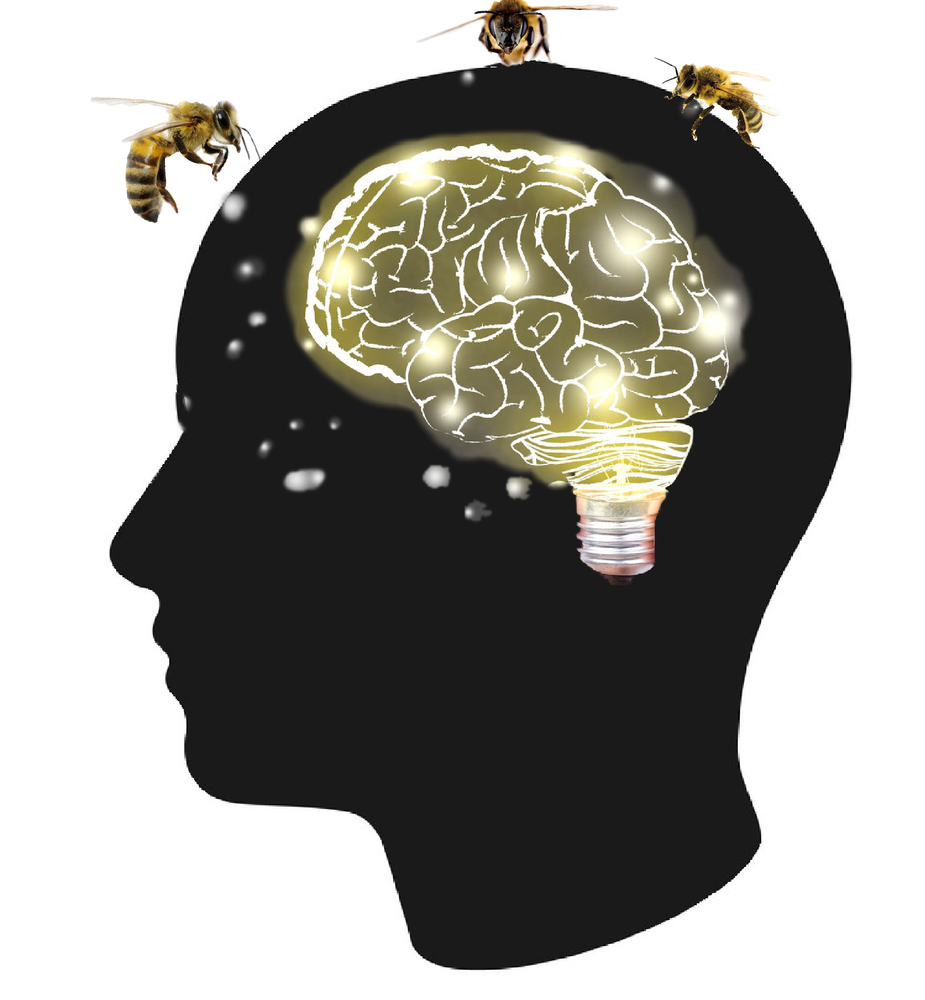
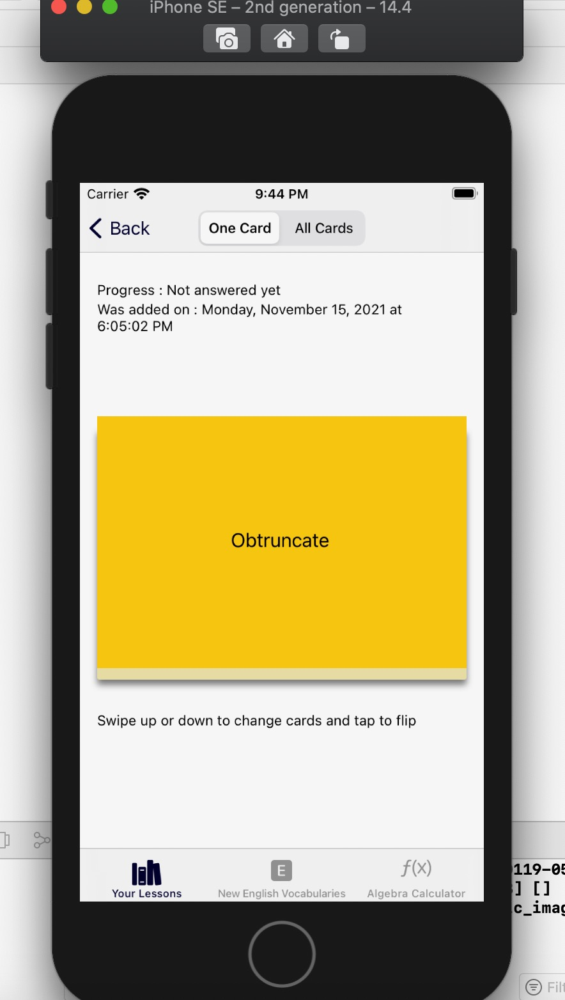

Bees Brain
Turn on the sound to hear the explanation 🔊
An IOS studying app made in swift that provides flashcards functionalities and the ability to test yourself. It supports both light and dark mode
In the first user flow, a default lesson called Vocabularies lesson and math lesson is saved.  There is a plus symbol on the top right and the floating plus button which adds a new lesson to your lessons page or library. While adding a lesson, you can add a reminder and when to study that particular lesson. A long press on the floating plus button allows you to edit and rearrange lessons. The (i) symbol to the right end of each lesson allows you to edit the lesson. Pressing on each lesson's row opens the list of lessons saved for that specific lesson title.
Going into the lessons saved for a particular lesson title is the second user flow if you would
say. There are plus symbol on the far top right and the floating plus button adds a new question and
Answer to your review page. There are emoji's that display to the left of each
question that tells how you did on the test you take in the next user flow.
Excellent - 🔥
Good - 😀
Almost - 👏🏽
Wrong - ☹️
A long press on the floating plus button allows you to edit and rearrange lessons. When you
swipe to the left of each lesson row, you are presented with options to delete, favorite, and show
progress (if you have taken a test)

Pressing on each review's row opens a flashcard for that question and
shows details and progress of that question. On top of the flashcard, a detail of that information
of the card is given. On the navigation above the detail, is the switch to choose between only
studying one flashcard or the entire flashcard. When a flashcard is tapped, it flips. When
going through the entire flashcard, swiping on the flashcards will present another card if any.
There is pencil and pad icon button in the middle on the top right of the page that leads to
the test page for that lesson. Your progress for that lesson is automatically saved.
In the test view controller, questions from the lesson you created are randomly presented to you in the rectangular space above the answer text field. Your progress is assessed based on how accurate your answer is compared to the answer you provided. Your progress is saved for reference later. A timer starts right when the test begins to keep track of how fast you are able to finish the test. There is a settings button in the navigation bar that allows you to change how the test should be taken to your preference. Whether written, true or false, or multiple choice. You can set levels of difficulty, you can choose how many questions you would like to answer, you can also schedule when to take a test as well.
Bees Brain is currently not on any App Store in the writing of this summary. The functionalities are being improved for a better user experience.